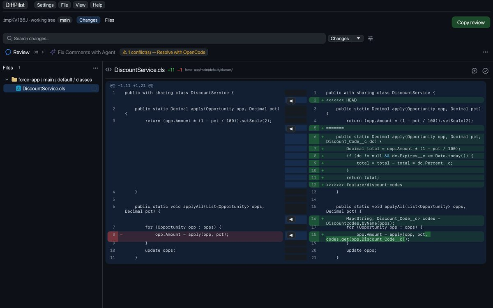

Using DiffPilot
Everything you need to open reviews from the terminal and plug DiffPilot into Git as your difftool and mergetool.
Get started
- Install DiffPilot from the Mac App Store, with Homebrew (below), or from the DMG by dragging it to
/Applications. - Open it once. First run setup asks for your editor (VS Code or Zed), whether to turn on GitHub, which coding agent to use, and your language. You can skip any step and change it later in Settings.
- Open a repository with File → Open Folder, drop a folder on the Dock icon, or use the
dipcommand below.
Requirements: macOS 11 or later and Git (included with the Xcode Command Line Tools: xcode-select --install). Optional: the GitHub CLI for pull requests, and Claude Code, Codex or OpenCode for agent features.
Install with Homebrew
One command installs the signed, notarized app into /Applications and puts dip on your PATH, so you can skip the next section. Recent Homebrew versions only load casks from third-party taps you trust, hence the first line:
$ brew trust --cask tzutalin/tap/diffpilot $ brew install --cask tzutalin/tap/diffpilot # later $ brew upgrade --cask diffpilot # remove the app (add --zap to also delete settings) $ brew uninstall --cask diffpilot
The Homebrew build is the same as the direct download, outside the App Store sandbox, so Git, pull requests and agents work with your own git, gh and logins.
Install the command line tool
Installed from the App Store or the DMG? The dip command is the app's own binary, so it always matches the version you have installed. Link it into a folder on your PATH once:
# a folder you own, no password needed $ mkdir -p ~/.local/bin $ ln -sf /Applications/DiffPilot.app/Contents/MacOS/dip ~/.local/bin/dip # add it to PATH if it isn't already (zsh) $ echo 'export PATH="$HOME/.local/bin:$PATH"' >> ~/.zshrc && source ~/.zshrc # check $ dip --version
Prefer /usr/local/bin? Use sudo ln -sf /Applications/DiffPilot.app/Contents/MacOS/dip /usr/local/bin/dip. If you build from source, make install creates the link for you.
Each dip call opens its own window, and returns when you close it. That is what lets Git wait for you in git difftool and git mergetool.
Command line
The general form is dip [options] [revisions] [paths]. With no arguments inside a repository, DiffPilot shows every uncommitted change. Outside a repository it opens the project you used last.
Local changes
$ dip # staged and unstaged changes $ dip --staged # what the next commit will contain $ dip --unstaged # edits not yet added $ dip src/ README.md # only these paths $ dip -C ~/code/billing-api # another repository $ dip --files # review whole files, comment on any line
The diff refreshes as files change on disk, so you can keep DiffPilot open while you or your agent edits.
Branches and commits
$ dip HEAD~1 HEAD # the last commit $ dip HEAD~3 # three commits ago to the working tree $ dip main..feature/discount-codes # a branch range $ dip --from v1.4.0 --to v1.5.0 # two tags $ dip . origin/dev # working tree against a remote branch $ dip main..feature -- src/billing/ # a range, limited to a folder
Files and folders
These work anywhere, with or without Git.
$ dip --compare a.json b.json # two files in the review view $ dip --compare build-41/ build-42/ # two folders, with a file tree $ dip --compare-edit left.yaml right.yaml # copy blocks across with ◀ ▶, then ⌘S $ git diff main | dip - # any unified diff on stdin $ curl -sL https://example.com/fix.patch | dip -
From Finder, choose Open With → DiffPilot on a folder or text file, or drop it on the Dock icon.
Pull requests
$ gh auth login # once $ dip --pr 318 # by number, in the current repository $ dip --pr https://github.com/acme/revenue-cloud/pull/318 $ dip --pr feature/discount-codes # by branch $ dip --pr 318 --clean # forget saved comments and reviewed marks
Existing PR comments are imported next to the code. Use Submit review to post your comments as Comment, Approve or Request changes. The PRs button lists PRs that need your review, PRs you opened, and PRs assigned to you. For GitHub Enterprise, run gh auth login --hostname your.host and set GH_HOST.
Use DiffPilot as git difftool
Git starts DiffPilot with the two versions of each file. With --dir-diff it hands over two folders, so every changed file opens in one window.
1. Add the tool to Git
$ git config --global diff.tool dip $ git config --global difftool.dip.cmd 'dip --compare "$LOCAL" "$REMOTE"' $ git config --global difftool.prompt false
Or paste this into ~/.gitconfig:
[diff] tool = dip [difftool "dip"] cmd = dip --compare "$LOCAL" "$REMOTE" [difftool] prompt = false
2. Run it
$ git difftool --dir-diff # all uncommitted changes, one window $ git difftool -d --staged # staged only $ git difftool -d main...HEAD # everything on this branch $ git difftool -d HEAD~1 -- src/ # last commit, one folder $ git difftool # one window per file

When the right side is your working tree, the ◀ buttons copy a block from the old version into your real file, so you can undo a single change without leaving the diff. Comments and reviewed marks work the same as in any other review.
Use DiffPilot as git mergetool
For each conflicted file, Git passes four paths: your version (LOCAL), the common ancestor (BASE), the incoming version (REMOTE), and the file to write (MERGED). DiffPilot shows the three versions of every conflict side by side.
1. Add the tool to Git
$ git config --global merge.tool dip $ git config --global mergetool.dip.cmd 'dip --merge "$LOCAL" "$BASE" "$REMOTE" "$MERGED"' $ git config --global mergetool.dip.trustExitCode true $ git config --global mergetool.prompt false $ git config --global mergetool.keepBackup false
Or in ~/.gitconfig:
[merge] tool = dip [mergetool "dip"] cmd = dip --merge "$LOCAL" "$BASE" "$REMOTE" "$MERGED" trustExitCode = true [mergetool] prompt = false keepBackup = false
2. Resolve conflicts
$ git merge feature/discount-codes # or rebase, cherry-pick, stash pop CONFLICT (content): Merge conflict in force-app/main/default/classes/DiscountService.cls $ git mergetool # opens DiffPilot for each conflicted file $ git commit # once every file is resolved

In the merge window:
- Use local, Use remote, Local + remote, Remote + local or Use base fills the resolution box for that conflict. You can edit the box, or type your own resolution.
- All local and All remote resolve every conflict in the file at once.
- The top bar counts conflicts that still need a choice.
- Save & exit writes the merged file and tells Git the file is resolved. Abort leaves the file untouched and Git keeps it marked as conflicted.
Git runs the merge itself (with git merge-file --diff3), so changes that don't overlap are already merged. DiffPilot only asks about the parts that really conflict.
Conflicts in the normal review
Run plain dip while a merge is in progress and conflicted files show up in the file tree with a warning mark. Opening one shows its conflict blocks with ours and theirs labelled. The bar above the diff offers Resolve with your agent, which asks the agent to resolve every conflict in the working tree. Review the result in the same window before you commit.


Coding agents
DiffPilot talks to agents over the Agent Client Protocol. Pick Claude Code, Codex or OpenCode in setup, or enter any ACP command under Settings → Agent.
- Draft review with agent asks the agent to review the diff and places its comments on the right lines.
- Ask agent on selected lines explains the change in the side panel.
- Polish with AI on a comment rewrites a rough note into clear feedback.
- Fix comments with agent sends every open comment, with file and line, in one message. The changes land in your working tree and the diff refreshes.
File writes and commands wait for your approval in the panel unless you turn on automatic approval. Agents can't touch your .git folder.
Keyboard shortcuts
| Action | Default |
|---|---|
| Next file / previous file | J / K |
| Mark file reviewed | R |
| Go to file | ⌘ P |
| Open recent repository or PR | ⌘ O |
| Refresh | ⌘ R |
| Show or hide the agent panel | ⌘ ⇧ ? |
| Settings | ⌘ , |
| Save a comment | ⌘ Return |
| Search in the diff | ⌘ F |
Change any of them under Settings → Keymap.
Option reference
| Option | What it does |
|---|---|
[ARGS] | Paths to limit the diff to, revisions such as HEAD~1 or A..B, or - to read a diff from stdin |
--staged | Show staged changes only |
--unstaged | Show unstaged changes only |
--from REV | Compare from this revision |
--to REV | Compare to this revision (default: working tree) |
--pr PR | Review a GitHub pull request by number, URL or branch (needs gh) |
--files | Review whole files instead of a diff |
--clean | Clear saved comments and reviewed state for this review on startup |
--compare LEFT RIGHT | Review two files or folders (used by git difftool) |
--compare-edit LEFT RIGHT | Two pane editor for copying blocks between two files or folders |
--merge LOCAL BASE REMOTE MERGED | Three way merge (used by git mergetool). Exits 0 when saved, 1 when aborted |
-C DIR | Run as if started in this folder |
-h, -V | Help and version |
Troubleshooting
dip: command not found
The link isn't on your PATH. Run ls -l ~/.local/bin/dip to check it exists, then echo $PATH to confirm ~/.local/bin is listed. Open a new terminal tab after editing ~/.zshrc.
dip: no differences
The two sides are identical, so there is nothing to open. For git difftool, check that you passed the revisions you meant, for example main...HEAD.
git mergetool says the merge was not completed
The window was closed with Abort or without saving. Run git mergetool again and press Save & exit after resolving every conflict.
Pull requests don't load
Run gh auth status. If you aren't signed in, run gh auth login. For GitHub Enterprise, set GH_HOST to your host.
The agent panel says the agent is missing
Install the agent's command line tool and make sure it runs from a terminal. Then choose Re-check in setup or pick it again under Settings → Agent.
Still stuck? Get support or open an issue.